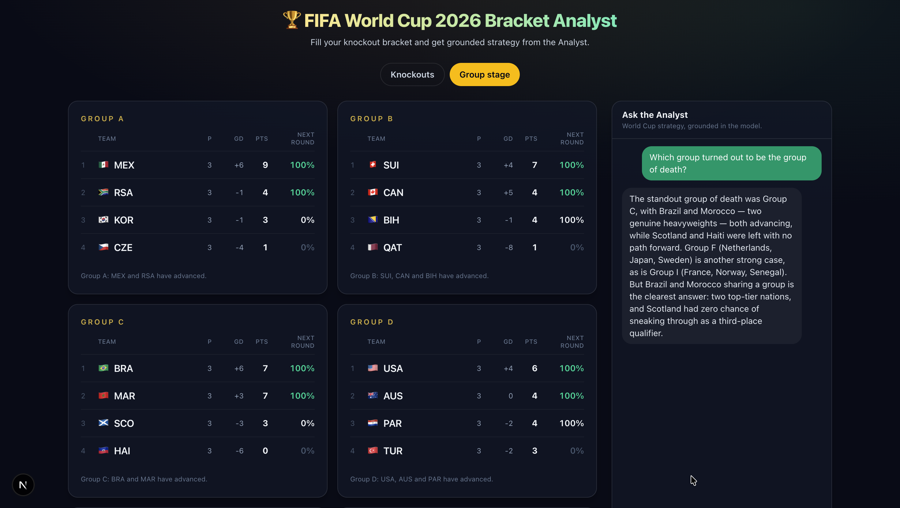
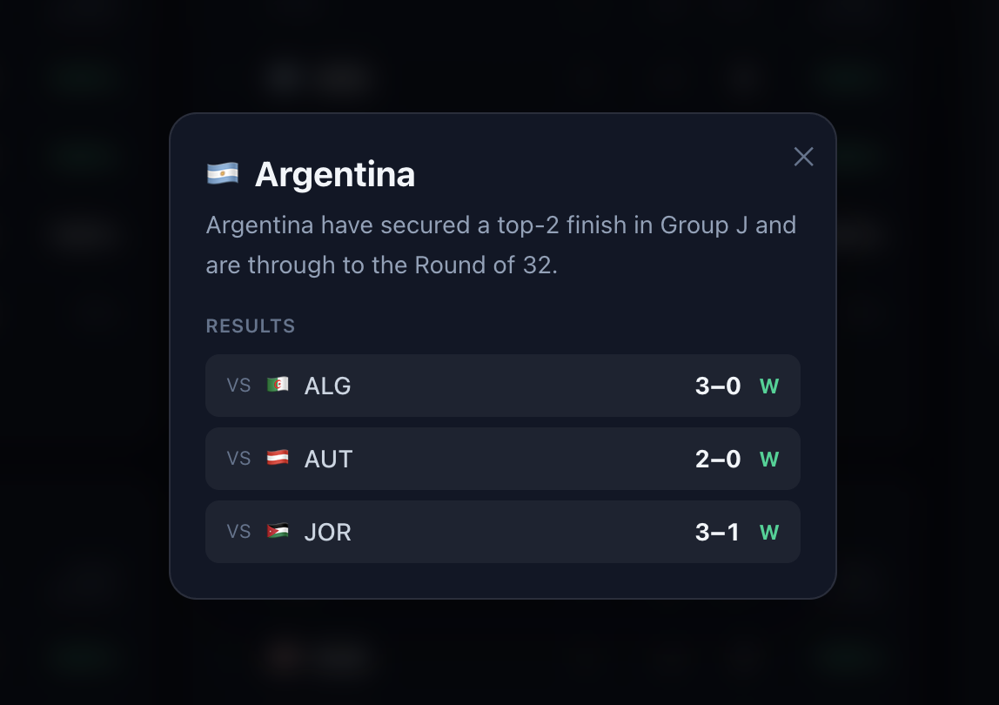
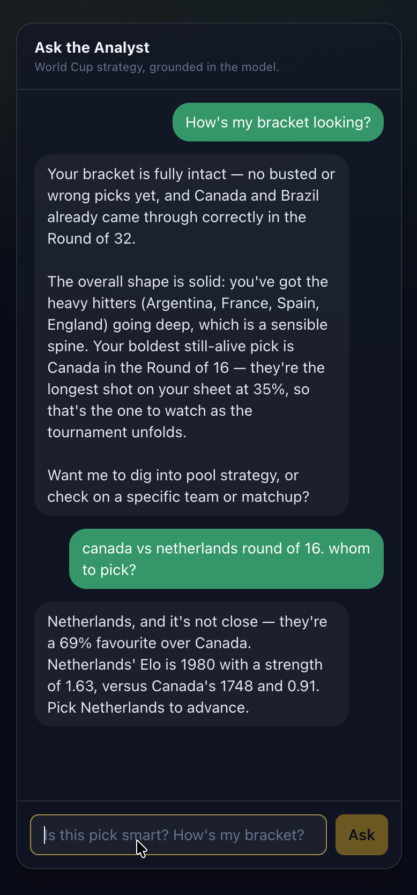

A complete World Cup bracket, in one sitting.
A 48-team World Cup has a genuinely hard first step: working out who survives the group stage. The Analyst predicts each team's odds of advancing — including the tricky bit, the 8 best third-placed teams drawn from across the 12 groups, whose fate decides the final knockout spots. Those predictions seed a complete Round of 32, so you start from a filled-in knockout draw instead of a blank one.
From there, it's the knockout bracket you actually fill in — yourself, or let the Analyst autofill a complete, editable one, calibrated to your pool size and risk appetite. Every pick carries its real head-to-head odds, bold underdogs are flagged, and when you're happy you lock it and export to CSV straight into your pool.
Winning a pool isn't the same as being right.
Winning a small pool is about being differentiated, not just accurate — if everyone picks the chalk, being right wins you nothing. That's the upset-watch engine's job: it doesn't just compute the odds of being right, it calculates the statistical payoff of a bold pick against your pool size and risk appetite. The "You vs. the Model" view shows how far your bracket strays from the favourites, so you stand out enough to win without blowing it up.
Ask it straight — "Is my bracket too safe to win?" — and it answers with numbers: how far you stray from the chalk, and where a well-chosen upset actually buys you an edge.
The part no scoreboard shows you.
The dashboard tracks all 12 groups live — every team marked Through, In contention, in the 3rd-place race, or Out, with a Next-Round % beside it. The top two of each group always advance; the twist is that the 8 best third-placed teams out of the 12 groups go through as well, and working out which ones means weighing results across every group at once — the part no single group's table can show you. Tap any team for the exact scenarios that decide its fate.


The expert friend you'd text for advice.
"Why are Netherlands favoured?" "NED vs MAR — who wins?" "Who's the top scorer so far?" A chat on both tabs answers free-form questions in plain English, drawing on the exact same engine that powers the bracket and the dashboard — so the chat and your bracket never disagree.

The math is real; the AI can't fake it.
Every probability starts from Elo team ratings — the same rating method FIFA uses for its own World Ranking, not opinions. From those ratings a dedicated engine plays the whole tournament out tens of thousands of times — modelling each match from the two teams' relative strength — to produce every standing, verdict, and knockout odd, with its rules locked down by an automated test suite so the numbers don't drift. The AI never computes any of it; it only reads what the engine produced and explains it in plain English.
zod into a typed tournament snapshot.And the way it behaves around those numbers is governed by hard rules, not left to the model's discretion:
The bracket, graded in public.
Talk is cheap, so here's the whole bracket against what actually happened — every pick exactly as exported from the app, nothing edited after the fact, misses included. Three of the four round-of-32 misses went to penalty shootouts, literal coin flips. All four quarterfinal calls landed, two of them against different opponents than predicted (England drew Norway, not Brazil; France drew Morocco, not the Netherlands) — the deep branches held even where the paths shifted. All four semifinalists were called, both semifinal results were called exactly, and Sunday's final is the final this bracket predicted — Spain vs Argentina, with the champion pick still in play. A pick is graded ✓ if the picked team advanced from that round.
These are my picks, built in the Bracket Analyst — the model's autofill plus my own judgment calls. That's the product working as intended: grounded odds, human bracket. I can't cryptographically prove the pick dates, so I won't claim a pre-tournament lock — next World Cup, the bracket gets published before kickoff. Every pick above matches the app's export verbatim, and you can build your own in the live app.
I built the Bracket Analyst because I've been in that group chat — everyone fills out a World Cup bracket, nobody actually knows half the teams, and everyone secretly wants to beat their friends. I wanted to put the knowledgeable friend they'd text into an app.
The insight that shaped it: winning a small pool isn't about being the most accurate, it's about being differentiated in the right way — while keeping every number honest enough to hold up when someone checks it. Getting both right is the part I'm proudest of.
This World Cup made it concrete. I ran my own bracket through the engine — the model's autofill plus my own reads — and the calls landed in public: every semifinalist, both semifinal results, the exact final. I set out to build the knowledgeable friend you'd text; ending up as the tool's first proven user is the ending I didn't script. The receipts are one scroll up, misses included.
Unofficial hobby project. The Bracket Analyst reads FIFA's undocumented public JSON endpoints and uses original styling only — no FIFA logos or imagery. It is not affiliated with, endorsed by, or associated with FIFA.
See it live — or dig into the build.